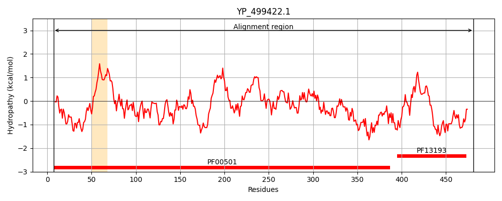
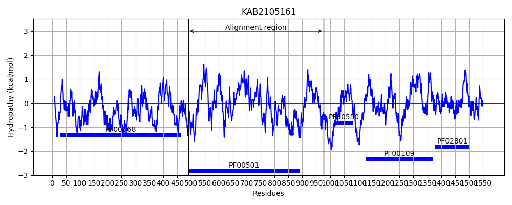
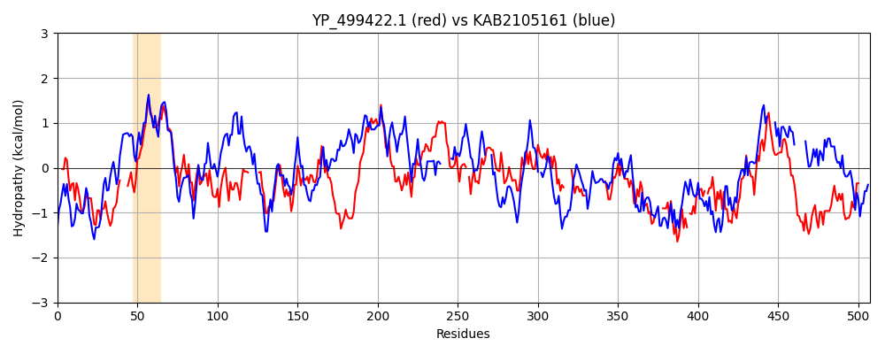

Hit Accession: KAB2105161
Hit TCID: 4.C.1.1.18
Hit Description: gnl|BL_ORD_ID|5715 gnl|TC-DB|KAB2105161.1|4.C.1.1.18 Hybrid PKS-NRPS synthetase [Alternaria gaisen]
Mach Len: 507
e:0.000000
Query TMS Count : 1
Hit TMS Count: 0
TMS-Overlap Score: 0.000000
Predicted Substrates:None
BLAST Alignment:
Score: 428 , Bit scores: 169 bits, E-value: 3.6e-45, Alignment length: 507, Percentage identity: 29
Query: 7 KLQAFADANPQSIAVRHTTDELTYQQLMDESSKLAHRLQG----SKKPMILFGHMSPYMIVGMIGAIKAGCGYVPVDTSIPEDRIKMIINKVQPEFVFNTTDESFESLEGEVFTIEDIKT------SQDPVIFDSQIKDNDTVYTIFTSGSTGEPKGVQIEYASLVQFTEWMLELNKSGNEQQWLNQAPFSFDLSVMAIYPCLASGGTLNLVDKNMINKPKLLNEMLTATPINIWVSTPSFMEMCLLLPTLNEEQY-GSLNEFFFCGEILPHRAAKALVNRFPSATIYNTYGPTEATVAVTSIQITQEILDQYPTLP----VGVERPGAR-----------LSTTDEGELVIEGQSVSLGYLKNDQKTAEVFNF----DDGIRTYHTGDKAKFE-NGQWFIQGRI-DFQIKLNGYRMELEEIETQLRQSEFVKEAIVVPVYKNDKVIHLIGAIVPTTEVTDNAEMTKNIKNDLKSRLPEYMIPRKFEWMEQLPLTSNGKIDRKKIAE 481
K +A N +++ + +TY++L D SS++AH L S ++L +V ++G ++AG YV +D +P+ R I + F+ + + L T+ + +Q DS KDND Y +FTSGSTG+PKGV +E ++L + + K G + L A F+FD SV+ L+ G TL VD + L ++ +N + +TPS +L T+ ++Y SL GE +A L + + +++GPTE TV VT +++ E LP +G P +R L+ + GE+ I G VS GY+ + T + F+ R Y TGD+ + +G+ I GR+ + +IKL GYRM+L EIE + + + + V V+ + L+ +VP T D I+ L +P Y +P +F ++ LPL SNGKID +++E
Sbjct: 490 KQRATEQPNTIALSSAERNETMTYRELADRSSQVAHYLVANGVSSGDGVLLHIARGFKTVVWLLGVLEAGAYYVVLDRKLPDKRKAAIAATSEARFLVTDDFKIQQVLSDLAITVVSLDVVDRELQTQPVTTLDSTTKDNDLAYIVFTSGSTGQPKGVMVEQSNLSHYVSATSSVVKIGPGSRVLQFATFAFDASVLEWAVTLSYGATLCFVDHPELLVGDYLATVIDKNEVNFFHTTPS------VLATIPMDRYLASLRMISVGGE---PSSAGLLGKWRQRSQLLHSFGPTETTVIVT-VEVVGEDQRSDAPLPSPSKIGKPFPNSRILICAEDNNDELAIGEHGEICIAGSQVSRGYIGQTELTQKHFHTIQLDGHSTRMYRTGDRGFLDADGKLCIGGRMKNREIKLRGYRMDLYEIEKSILDNSPEVQVVSVKVHADS----LVAFVVPETAPCD------VIRGRLALEVPSYSLPARFFAVQSLPLNSNGKIDHAQVSE 976 | Protein Hydropathy Plots: |
|---|
|  |  |
Pairwise Alignment-Hydropathy Plot:
|
|---|
|  |